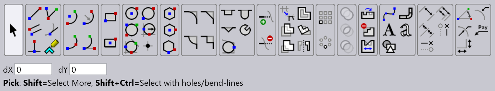
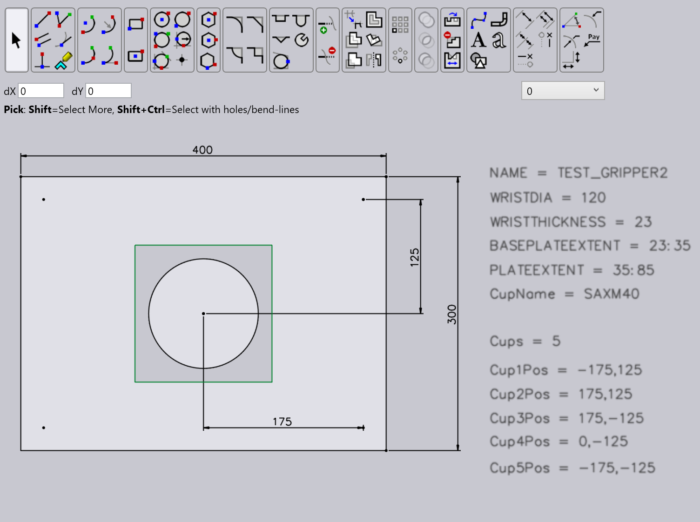
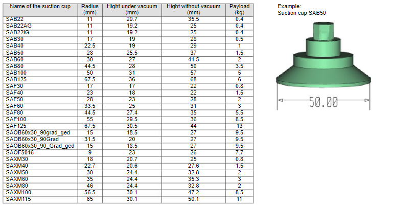

그리퍼 생성
일부 벤드 사이에서 그리퍼가 파트를 잡는 방식을 변경해야 할 수 있습니다. Bend 데이터베이스에는 자동 벤딩 프로세스에 사용할 수 있는 다수의 벤딩 그리퍼가 포함되어 있습니다. 필요한 경우 각 파트 형상에 맞게 조정된 자체 그리퍼를 생성할 수 있습니다.
그리퍼를 생성하려면 손목, 선택적 베이스 플레이트, 석션 플레이트 및 석션 컵에 대한 정보와 각각의 위치가 필요합니다.
이를 위해 각각의 형상과 매개변수를 포함하는 DXF 파일을 생성해야 합니다.
드로잉 모듈을 사용하여 원하는 석션 컵으로 자체 그리퍼 형상을 생성합니다.
새 그리퍼를 생성하려면:
-
TecZone Bend 내에서 새 드로잉을 열고 스케치 옵션을 선택합니다.

-
손목, 베이스 플레이트 및 석션 컵 플레이트가 있는 그리퍼 드로잉을 생성합니다 (또는 기존 DXF 드로잉을 열고 필요에 따라 조정합니다).
-
베이스 플레이트의 윤곽에 다른 색상(예: 녹색)을 적용합니다.

-
선택적 베이스 플레이트의 올바른 그래픽 표시를 위해 별도의 레이어에 있어야 합니다. 베이스 플레이트 사각형을 선택하고 레이어를 BASEPLATE로 선택합니다. 레이어 색상이 녹색으로 변경됩니다.

-
손목의 중심이 드로잉 제로 포인트에 있는지 확인하고 매개변수에 필요한 텍스트 엔티티를 입력합니다.

-
이 그리퍼의 많은 설정은 KEY=VALUE 형식의 텍스트 엔티티에서 가져옵니다. 다음은 가능한 키와 그 의미입니다
키 의미 Name
그리퍼의 이름
Weight
그리퍼의 무게(kg 단위)
WRISTDIA
손목 직경(BM60/BM150에 해당하는 120/180이어야 함)
WRISTTHICKNESS
아래에 있는 손목 실린더의 Z 두께. 손목 실린더는 Z=0에서 이 값까지 확장됩니다
PLATEEXTENT
플레이트의 Z 범위(ZMIN:ZMAX 형식). 일반적으로 ZMIN을 WRISTTHICKNESS와 동일하게 설정하여 플레이트가 손목 실린더가 끝나는 곳에서 시작하도록 합니다.
BASEPLATEEXTENT
베이스플레이트의 Z 범위(아래 Two-Layered-Grippers 섹션 참조)
CUPNAME
이 그리퍼에 사용되는 석션 컵의 타입(예: SAXM50)
CUPS
석션 컵의 수
CUP1POS
첫 번째 석션 컵의 위치(X,Y 형식)
CUP2POS
두 번째 석션 컵의 위치
CUPNPOS
N번째 석션 컵의 위치
CUPDIA
석션 컵을 지정하기 위해 CUPNAME 대신 사용할 수 있습니다(권장하지 않음).
-
드로잉 모듈에서 텍스트 매개변수를 업데이트한 후 아래에 언급된 경로에서 DXF 파일로 내보냅니다.

석션 컵 타입
Bend 데이터베이스에는 새 그리퍼를 구성할 때 사용할 수 있는 다양한 타입의 석션 컵이 있습니다.
